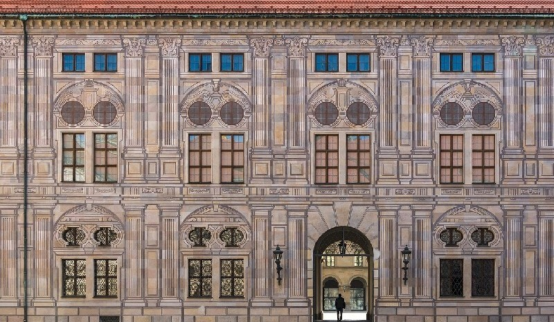

Michał
"Makłowicz z Radomia"
Strona Główna
O mnie
Filmy i seriale
Zdjęcia
Wywiad - rzeka
Pałac Kajzera

Śladami Bawarii - wędrówka 1635.
W tym pałacu moja praprababcia gotowała wielkiemu cesarzowi Wilhelmowi II